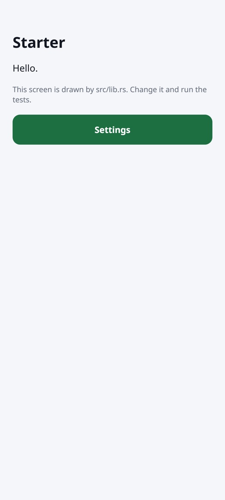
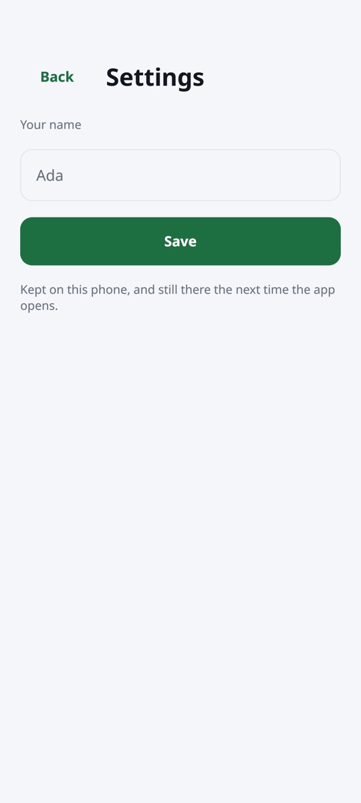

Starter
The app morningstar-new writes. It is not kept in the repository: it is generated, so it cannot drift from the generator. These pictures are of one generated for this page.


What it shows
- Two screens on a
Navigator, with a transition between them and the system's Back. - A text input in a framed box, with a label for screen readers.
- A value kept on the phone with
storeand read back atsetup. - A theme with one brand colour.
- Tests that pass from the first minute: a journey, an accessibility check, and a picture of each screen.
With --server it also has an "Ask the server" button, an HTTP request with a timeout, and a dependency-free Node server with its own tests.
Make one
cargo run -q -p morningstar-devtools --bin morningstar-new -- my-app --name "My App"
cargo test -p my-app
tools/preview.sh my-appYour first app continues from here.
What has been verified
A generated app builds, passes its 11 tests, and builds into an Android APK of about 10 MB. No generated app has been run on a phone yet.